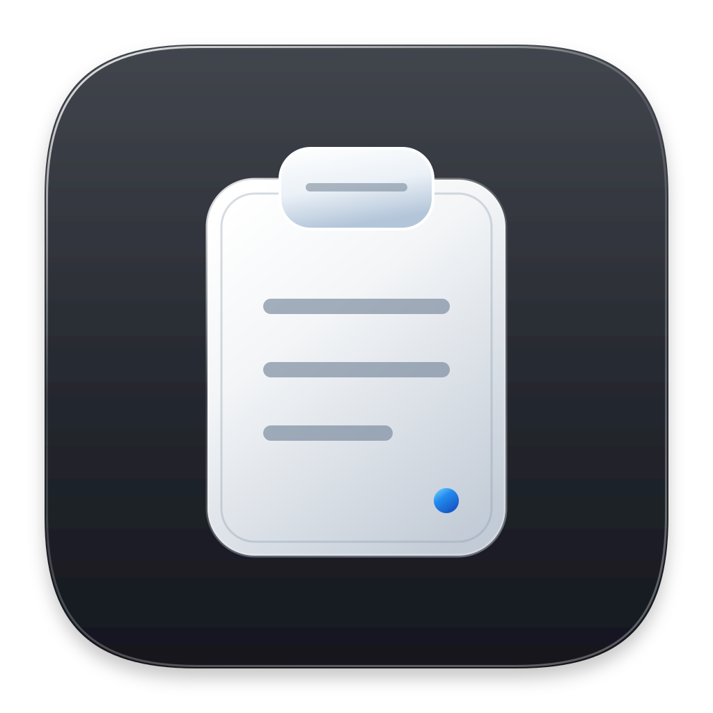

01 · Frost
Closest to a native Apple utility. Clear clipboard silhouette, cool glass, blue depth.

02 · Stack
A quieter copy/history metaphor. Two translucent sheets on graphite.

03 · Silver
More like the BetterDisplay reference. Sculpted silver with one small blue accent.
Drafts only. No icon has replaced the installed app yet. Original vector artwork, not copied Apple assets.